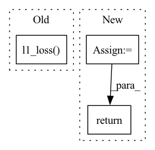

Pattern ID :37874
Before Change
hr = hr.sub(self.mean).div(self.std)
// Find the feature map difference between the two images
loss = F.l1_loss( self.feature_extractor(sr), self.feature_extractor(hr))
return loss
After Change
hr_feature = self.feature_extractor(hr_tensor)
// Find the feature map difference between the two images
feature_loss = F.mse_loss(sr_feature[self.feature_extractor_node], hr_feature[self.feature_extractor_node])
return feature_loss
In pattern: SUPERPATTERN
Frequency: 3
Non-data size: 3
Instances Fragment ID: 108603465
Project Name: lornatang/esrgan-pytorch
Commit Name: a9031d71f6f27449fe63ec703344577e35fa87cb
Time: 2022-04-15
Author: liuchangyu1111@gmail.com
File Name: model.py
M Class Name: ContentLoss
N Class Name: ContentLoss
M Method Name: forward(3)
N Method Name: forward(3)
M Parent Class: nn.Module
N Parent Class: nn.Module
M File Name: model.py
N File Name: model.py
M Start Line: 227
M End Line: 233
N Start Line: 206
N End Line: 215
Before Change
mel_losses.append(self.mse_loss(mel_output, mel_target))
duration_predictor_target.requires_grad = False
duration_predictor_loss = self.l1_loss( duration_predicted,
duration_predictor_target.float())
return mel_losses, duration_predictor_loss
After Change
def forward(self, mel_output, mel_output_postnet, gate_output, mel_target, gate_target):
mel_loss = self.mse_loss(mel_output, mel_target)
mel_postnet_loss = self.mse_loss(mel_output_postnet, mel_target)
gate_loss = self.gate_loss(gate_output, gate_target)
return mel_loss, mel_postnet_loss, gate_loss
Fragment ID: 108603464
Project Name: xcmyz/tacotron2.xcmyz
Commit Name: 267a1300fd222bb660d20c5cc7c676ff6aad2a68
Time: 2020-09-02
Author: xcmyz@outlook.com
File Name: loss.py
M Class Name: DNNLoss
N Class Name: DNNLoss
M Method Name: forward(6)
N Method Name: forward(5)
M Parent Class: nn.Module
N Parent Class: nn.Module
M File Name: loss.py
N File Name: loss.py
M Start Line: 11
M End Line: 21
N Start Line: 11
N End Line: 16
Before Change
feature_matching_loss = 0.0
for feat_fake, feat_real in zip(fmap_fake, fmap_real):
feature_matching_loss += nn.functional.l1_loss( feat_fake, feat_real.detach())
feature_matching_loss += nn.functional.l1_loss(score_fake.mean(), torch.tensor(-1.0, device=score_fake.device))
feature_matching_loss += nn.functional.l1_loss(score_real.mean(), torch.tensor(1.0, device=score_real.device))
After Change
discr_loss = 0.0
discr_loss = discr_loss + nn.functional.mse_loss(input=score_fake, target=torch.zeros(score_fake.shape, device=score_fake.device), reduction="mean")
discr_loss = discr_loss + nn.functional.mse_loss(input=score_real, target=torch.ones(score_real.shape, device=score_real.device), reduction="mean")
return discr_loss
def calc_discriminator_loss(self, data_generated, data_real):
return self._discriminator_feature_matching(data_generated.detach(), data_real) Fragment ID: 108603469
Project Name: digitalphonetics/ims-toucan
Commit Name: a31e89faf6fbae2aa3b2ae773ccca68d4c423dfa
Time: 2023-03-23
Author: lux.florian@gmail.com
File Name: TrainingInterfaces/Text_to_Spectrogram/ToucanTTS/SpectrogramDiscriminator.py
M Class Name: SpectrogramDiscriminator
N Class Name: SpectrogramDiscriminator
M Method Name: _discriminator_feature_matching(3)
N Method Name: _discriminator_feature_matching(3)
M Parent Class: torch.nn.Module
N Parent Class: torch.nn.Module
M File Name: TrainingInterfaces/Text_to_Spectrogram/ToucanTTS/SpectrogramDiscriminator.py
N File Name: TrainingInterfaces/Text_to_Spectrogram/ToucanTTS/SpectrogramDiscriminator.py
M Start Line: 41
M End Line: 48
N Start Line: 41
N End Line: 45